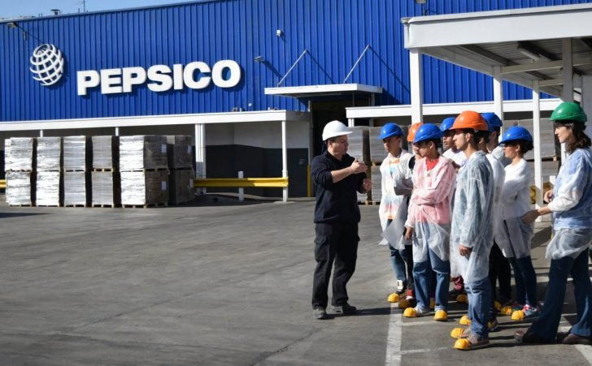

Somos una de las empresas de productos de consumo más importantes del país. Nuestros productos, de marcas como Sabritas, Gamesa, Quaker, Pepsi, Gatorade y Sonrics, tienen presencia en México desde hace más de 116 años; y como empresa global, tenemos presencia en más de 200 países.
Nuestro compromiso con el desarrollo laboral de las más de 51 mil personas que colaboran con nosotros nos lleva a buscar personal del más alto nivel que esté dispuesto a contribuir a la construcción de un sistema alimentario más sustentable. Somos reconocidos como una de las mejores empresas para trabajar en México. Por ello nos mantenemos en la búsqueda de las personas más empáticas, creativas y con una gran capacidad de adaptarse al cambio